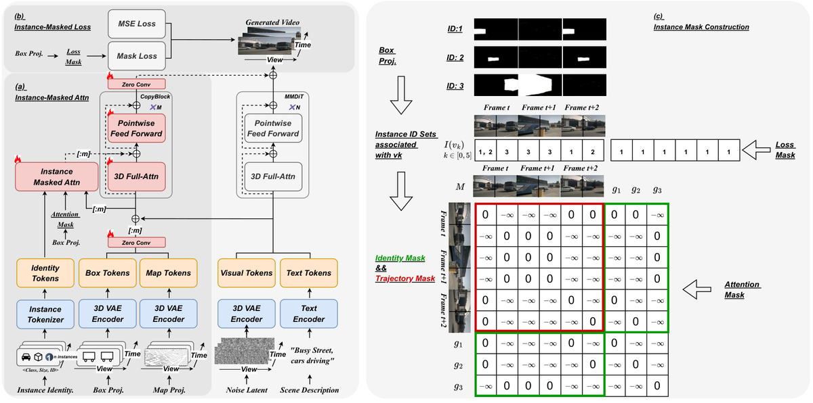

ConsisDrive
简单摘要
自动驾驶依赖于在大规模、高质量多视图驾驶视频上训练的强大模型。尽管世界模型为生成真实驾驶数据提供了一种经济高效的解决方案，但它们经常遭受身份漂移的困扰，即由于缺乏实例级时间约束，同一对象在不同帧之间改变其外观或类别。我们引入了 ConsisDrive，这是一种身份保护的驾驶世界模型，旨在在实例级别强制执行时间一致性。我们的框架包含两个关键组成部分：（1）实例掩码注意力，它在注意力块中应用实例身份掩码和轨迹掩码，以确保视觉标记仅与跨空间和时间维度的相应实例特征交互，从而保持对象身份一致性；
(2) 实例掩蔽损失，通过概率实例掩蔽自适应地强调前景区域，减少背景噪声，同时保持整体场景保真度。通过集成这些机制，ConsisDrive 实现了最先进的驾驶视频生成质量，并在 nuScenes 数据集上展示了下游自动驾驶任务的显着改进。我们的项目页面在这里（https://shanpoyang654.github.io/ConsisDrive/page.html）。


简而言之，这篇论文关注的核心是：自动驾驶依赖于在大规模、高质量多视图驾驶视频上训练的强大模型。尽管世界模型为生成真实驾驶数据提供了一种经济高效的解决方案，但它们经常遭受身份漂移的困扰，即由于缺乏实例级时间约束，同一对象在不同帧之间改变其外观或类别。我们引入了 ConsisDrive，这是一种身份保护的驾驶世界模型，旨在在实例级别…
自动驾驶在过去的几十年里引起了学术界和工业界的广泛关注。为了实现可靠的性能，自动驾驶系统依赖于带有精确注释的高质量、大规模多视图驾驶视频，这对于训练感知、跟踪和规划模型至关重要。然而，收集和标记此类现实世界的驾驶数据既昂贵又费力。受益于生成视频模型的快速进步，驾驶世界模型已成为一种有前途的替代方案。这些模型可以大规模合成多样化且真实的驾驶场景，从而显着减少对昂贵的数据收集和注释的需求。跨帧的实例身份保留对于生成真实的驾驶视频至关重要，因为它直接影响视频质量并决定其在下游自动驾驶任务中的适用性。
例如，多对象跟踪和感知任务需要时间稳定的实例外观，以确保可靠的时间上下文理解。同样，规划依赖于周围代理的时间一致轨迹来支持准确的运动预测。这些要求要求世界模型在连续帧中一致地维护实例身份（例如类别、颜色和形状），从而确保动态对象的外观和行为的连续性。从更广泛的角度来看，保留实例身份的能力对于世界模型有效捕获现实世界环境的潜在动态至关重要。从技术上讲，实施强时间一致性可以提高基于合成数据训练的自动驾驶模型的可靠性，最终增强其对现实场景的泛化。
然而，现有的基于扩散的世界模型经常遭受身份漂移的困扰，即同一对象在不同帧之间改变其外观甚至类别（例如，红色汽车变成黑色，或公共汽车变成卡车），如图 1 所示。这种身份不一致严重降低了视频的真实感，并限制了生成的数据对下游驾驶任务的适用性。我们确定了这个问题的三个主要原因。首先，缺乏明确的实例身份条件会阻止模型在长期范围内锚定一致的身份。例如，DriveDreamer2 不包含特定于实例的条件（例如类别），导致明显的语义变化，如图 (a) 所示。
这凸显了注入显式实例 ID 的必要性……
核心创新
综合引言与方法部分，这篇论文的核心创新可以概括为以下几方面：
1）问题定义与研究动机
自动驾驶在过去的几十年里引起了学术界和工业界的广泛关注。为了实现可靠的性能，自动驾驶系统依赖于带有精确注释的高质量、大规模多视图驾驶视频，这对于训练感知、跟踪和规划模型至关重要。然而，收集和标记此类现实世界的驾驶数据既昂贵又费力。受益于生成视频模型的快速进步，驾驶世界模型已成为一种有前途的替代方案。这些模型可以大规模合成多样化且真实的驾驶场景，从而显着减少对昂贵的数据收集和注释的需求。跨帧的实例身份保留对于生成真实的驾驶视频至关重要，因为它直接影响视频质量并决定其在下游自动驾驶任务中的适用性。例如，多对象跟踪和感知任务需要时间稳定的实例外观，以确保可靠的时间上下文理解。同样，规划依赖于周围代理的时间一致轨迹来支持准确的运动预测。这些要求要求世界模型在连续帧中一致地维护实例身份（例如类别、颜色和形状），从而确保动态对象的外观和行为的连续性。从更广泛的角度来看，保留实例身份的能力对于世界模型有效捕获现实世界环境的潜在动态至关重要。从技术上讲，实施强时间一致性可以提高基于合成数据训练的自动驾驶模型的可靠性，最终增强其对现实场景的泛化。然而，现有的基于扩散的世界模型经常遭受身份漂移的困扰，即…
2）方法框架与核心模块
我们引入了一种身份保护的驾驶世界模型，专门设计用于强制实例级时间一致性。我们的框架将实例意识融入到 3D 全注意力机制（第 2 节）和训练目标（第 2 节）中，其中精心构建的实例掩码充当结构先验，以指导跨框架的一致性。我们模型的整体架构如图所示。概述 在 OpenSora V2.0 的基础上，我们采用变分自动编码器（视频 DC-AE）进行视频编码，使用 T5XXL 和 CLIP-Large 进行文本编码，使用 MMDiT 作为去噪过程的基础模型。为了实现细粒度控制，我们引入了一套全面的控制条件，包括边界框投影、路线图和场景描述，并将它们集成到条件视频生成过程中。此外，我们引入了实例类别标签、实例大小和跟踪 ID 来提取实例身份条件并将它们合并到注意力过程中，这是我们提出的实例屏蔽注意力模块中的关键机制，详细信息请参见第 2 节。 。鉴于需要处理多个控制元素，我们采用 ControlNet 将控制信号注入视频生成过程。为了集成这些控制感知表示，我们将双流 MMDiT 主干的前 19 个基本块复制为专用控制块。每个控制块将条件特征与基本块的相应输出融合，从而调制特征流并确保控制信号有效地…
3）实验设计与工程价值
设置数据集和基线。我们在 nuScenes 数据集上训练和评估我们的模型。为了对我们的方法进行基准测试，我们将其与最先进的驾驶世界模型进行比较，包括 BEVControl 、 DriveDiffusion 、 DriveDreamer2 、 Panacea 和 MagicDrive-V2 。指标。对于真实感评估，我们使用 FID 和 FVD 来衡量视频质量。为了评估属性绑定和实例掩蔽损失监督的有效性，我们测量生成的实例与其条件类别和大小之间的对齐情况，确保语义和几何结构都得到忠实保留。该评估是通过感知任务进行的，因为准确的类别识别和尺寸定位是可靠感知的基本要求。因此，感知性能直接反映了对象类别和空间范围的生成准确性。具体来说，继 Panacea 之后，我们采用基于视频的感知模型 StreamPETR 并报告 nuScenes 检测分数 (NDS) 和平均精度 (mAP) 等指标。其中，m…
技术细节
下面按照论文的方法章节结构展开，重点说明模型的关键模块、公式设计和训练策略。
我们引入了一种身份保护的驾驶世界模型，专门设计用于强制实例级时间一致性。我们的框架将实例意识融入到 3D 全注意力机制（第 2 节）和训练目标（第 2 节）中，其中精心构建的实例掩码充当结构先验，以指导跨框架的一致性。我们模型的整体架构如图所示。概述 在 OpenSora V2.0 的基础上，我们采用变分自动编码器（视频 DC-AE）进行视频编码，使用 T5XXL 和 CLIP-Large 进行文本编码，使用 MMDiT 作为去噪过程的基础模型。为了实现细粒度控制，我们引入了一套全面的控制条件，包括边界框投影、路线图和场景描述，并将它们集成到条件视频生成过程中。此外，我们引入了实例类别标签、实例大小和跟踪 ID 来提取实例身份条件并将它们合并到注意力过程中，这是我们提出的实例屏蔽注意力模块中的关键机制，详细信息请参见第 2 节。 。鉴于需要处理多个控制元素，我们采用 ControlNet 将控制信号注入视频生成过程。为了集成这些控制感知表示，我们将双流 MMDiT 主干的前 19 个基本块复制为专用控制块。每个控制块将条件特征与基本块的相应输出融合，从而调制特征流并确保控制信号有效地合并到整个生成管道中。 Instance-Masked Attention Instance-Masked Attention 模块如图（a）所示，旨在引导模型对每个单独实例的注意力。通过从图（c）中的对象边界框构造实例掩码，我们有效地防止了跨多个实例的信息泄漏。我们添加了建议的可学习实例屏蔽注意力模块来处理每个实例的身份调节。实例屏蔽注意力模块将实例身份条件与复制块的相应输出融合，并调整其特征以实现实例感知注意力。现在，我们详细描述实例屏蔽注意力模块中的关键操作。如图（a）所示，实例屏蔽注意力模块旨在明确引导模型对每个单独实例的注意力。实例掩码是由对象边界框构造的，如图 1 所示。
(c)，防止跨实例的信息泄漏并确保实例级的解开。我们引入了一种可学习的实例屏蔽注意力机制，该机制注入每个实例的身份条件并将它们与复制块的相应输出融合。通过调节这些功能，该模块可以实现实例感知注意力，从而保留实例身份并确保跨空间和时间维度的实例一致性。现在我们详细描述 Instance-Masked Attention 模块的关键操作。实例身份条件对于视频中出现的每个实例，我们构建一个全局......
$$ g_i = \text{MLP}\!\left([\tau_\theta(c_i), \gamma(s_i), \gamma( ID_i)]\right). $$
公式：g_i = \text{MLP}\!\left([\tau_\theta(c_i), \gamma(s_i), \gamma( ID_i)]\right)。 上下：映射以编码跟踪ID和边界框大小。同时，我们采用 CLIP-Large 文本编码器从类别标签中提取语义特征。这些组件连接并通过多层感知器 (MLP)，以生成实例全局身份条件嵌入：T…
$$ \tilde{V} = \text{SA}_\text{mask}([V, G]). $$
公式：\tilde{V} = \text{SA}_\text{mask}([V, G]). 上下文：ectionInstance-Masked Attention and Fuse Mechanism 我们将从副本 MMDiT 块中提取的视觉标记表示为 ，将实例条件标记表示为 。然后，我们在 Instance-Masked Attention 模块中的主干特征和连接的实例条件标记上应用 3D 自注意力（SA），这可以...
$$ \tilde{\mathbf{x}}_{i,c}^t = \mathbf{K}^t \left( \mathbf{R}^t \mathbf{X}_{i,c} + \mathbf{T}^t \right), \quad \mathbf{x}_{i,c}^t = \Big(\tfrac{\tilde{x}}{\tilde{z}}, \tfrac{\tilde{y}}{\tilde{z}}\Big), $$
公式：\tilde{\mathbf{x}}_{i,c}^t = \mathbf{K}^t \left( \mathbf{R}^t \mathbf{X}_{i,c} + \mathbf{T}^t \right), \四边形 \mathbf{x}_{i,c}^t = \Big(\tfrac{\tilde{x}}{\tilde{z}}, \tfrac{\tilde{y}}{\tilde{z}}\Big), 上下：表示投影边界框覆盖 token 的空间区域的实例 ID 的集合，如图（c）所示。形式上，每个实例都由带有角 的 3D 边界框表示，其中 。给定帧 处的相机参数，角点将被投影为形成多边形的凸包......
$$ I(v_k) \equiv I(t,p) = \{\, i \mid \exists (x,y),\, \tilde{BM}_i(t,x,y)=1 \,\}, $$
公式：I(v_k) \equiv I(t,p) = \{\, i \mid \exists (x,y),\, \tilde{BM}_i(t,x,y)=1 \,\}, 上：i,c^t = (xz, yz)，与形成多边形的凸包方程。光栅化产生二进制掩模。我们进一步应用三线性插值将这些掩模映射到潜在空间，表示为 。对于从 VAE 压缩获得的补丁标记，我们定义对应于 的扁平视觉标记在哪里。即时…
$$ V = V + \tanh(\omega)\,\tilde{V}[:m], $$
公式：V = V + \tanh(\omega)\,\tilde{V}[:m], 上下文：确保跨框架的同一实例的令牌可以相互关注，而严格禁止跨不同实例的交互。这种设计通过显式地启用特定于实例的特征在其轨迹上的传播来保持时间一致性。最后，输出...
$$ \label{eq: dynamic_mask_loss} \mathcal{\tilde{L}}_{\text{mask}} = \begin{cases} \mathcal{L}_{\text{mask}}, & \text{if } p < \alpha \\ \mathcal{L}, & \text{if } p \geq \alpha \end{cases} $$
公式：\label{eq:dynamic_mask_loss} \mathcal{\tilde{L}}_{\text{掩码}} = \开始{案例} \mathcal{L}_{\text{mask}}, & \text{if } p < \alpha \\ \mathcal{L}, & \text{if } p \geq \alpha \结束{案例} 上下文：逐元素乘法。然而，直接将这种屏蔽损失应用于所有训练样本可能会导致模型对前景物体过度拟合，进而损害背景区域（例如道路和高清地图）的生成质量。为了缓解这个问题，我们采用概率动态模型……

把全文方法串起来看，这篇论文的逻辑基本都遵循同一条主线：先把输入组织成更容易处理的表示，再通过模型结构和损失函数把这个表示推向目标输出，最后用可视化与数值实验共同证明该设计有效。
实验结论
实验部分主要回答两个问题：第一，方法是否真的优于已有基线；第二，这种优势来自哪一个设计决策。
设置数据集和基线。我们在 nuScenes 数据集上训练和评估我们的模型。为了对我们的方法进行基准测试，我们将其与最先进的驾驶世界模型进行比较，包括 BEVControl 、 DriveDiffusion 、 DriveDreamer2 、 Panacea 和 MagicDrive-V2 。指标。对于真实感评估，我们使用 FID 和 FVD 来衡量视频质量。为了评估属性绑定和实例掩蔽损失监督的有效性，我们测量生成的实例与其条件类别和大小之间的对齐情况，确保语义和几何结构都得到忠实保留。该评估是通过感知任务进行的，因为准确的类别识别和尺寸定位是可靠感知的基本要求。因此，感知性能直接反映了对象类别和空间范围的生成准确性。具体来说，继 Panacea 之后，我们采用基于视频的感知模型 StreamPETR 并报告 nuScenes 检测分数 (NDS) 和平均精度 (mAP) 等指标。其中，mAP直接衡量物体类别检测的准确性，而NDS则将类别检测与定位、定向等方面结合起来，提供感知质量的整体评估。为了进一步评估跨帧的实例特定特征的传播，我们评估了现实世界自动驾驶场景中多目标跟踪（MOT）任务的模型。 MOT 使用 ID 开关 (IDS) 等指标来明确衡量随着时间的推移保持一致的对象身份的能力。我们还采用 StreamPETR 模型作为跟踪器并报告标准 MOT 指标，包括 AMOTA、AMOTP 和 IDS。虽然 Bevfusion 也被用于感知评估，但它基于图像模型，性能比基于视频的 StreamPETR 差，并且缺乏提供对象跟踪指标的能力。出于这些原因，我们选择 StreamPETR 作为我们的评估模型。训练细节我们的方法是基于OpenSora V2.0实现的。所有训练输入均设置为 16x256x448 并在 A100 GPU 上进行。实验结果表明，我们的方法可以稳定生成超过200帧。主要结果定量分析为了验证我们生成的视频的细粒度时间一致性和高保真度，我们将我们的方法与各种最先进的驾驶世界模型进行比较。我们使用 nuScenes 数据集的标签作为条件生成训练和验证数据。视觉真实感和时间保真度。
我们生成的视频实现了卓越的时间保真度，将 FVD 降低至 .这种改进源于所提出的实例屏蔽注意力模块，该模块保留跨帧的实例属性，从而增强实例级时间一致性。...
- 方法在核心指标上的优势与结构设计和训练目标直接相关；
- 消融实验表明，拿掉关键模块后性能与结果质量都有明显回落；
- 论文不仅比较数值，也关注可视化质量、稳定性和泛化能力等更贴近真实使用的信号。
理解评价
我们提出了一种保留身份的驾驶世界模型，专门用于增强实例级时间一致性。我们的方法引入了两个关键的进步：实例掩码注意力模块，它明确地将模型的注意力引导到每个单独的实例，以及实例掩码损失监督，它使用实例掩码来强调对前景区域的监督。通过整合这些实例感知机制，实现了 SOTA 生成质量并显着改善了下游自动驾驶任务。致谢这项工作得到了教育部基础与交叉学科突破计划（编号：JYB2025XDXM113）和国家自然科学基金（编号：62332016）的支持。
道德声明这项工作的重点是自动驾驶研究的视频生成。我们的模型是在公开数据集（例如 nuScenes）上进行训练和评估的，仅用于学术研究。我们强调，生成的数据不应在未经仔细验证的情况下直接部署在现实世界的驾驶系统中，因为安全关键应用程序需要严格的测试。再现性声明我们提供模型架构、训练目标和评估协议的全面详细信息。这项工作中使用的所有数据集都是公开的，并且详细记录了实施细节以确保可重复性。代码和配置文件包含在补充材料中，以方便进一步研究和独立验证。
如果把它当成研究参考，建议重点关注三件事：第一，这套方法真正依赖的归纳偏置是什么；第二，实验中真正拉开差距的模块是哪一个；第三，它的局限究竟来自数据、算力还是监督信号本身。
以下相关论文可以作为进一步追踪的入口：